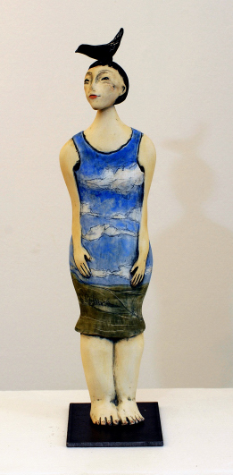
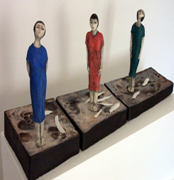
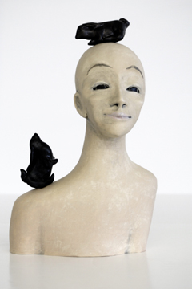

|

|

|

|
| 25 YEARS OF WATCHING HER GROW: hand built porcelain, oxides, welded steel | Witnesses: Sculpture, stoneware, oxides, under glazes, acrylics, 2006 | FIGURE WITH TWO RABBITS: white stoneware, underglazes, terra sigilatta |
|---|
Figures are pictorial or sculptural representations of many things, especially of the human body.